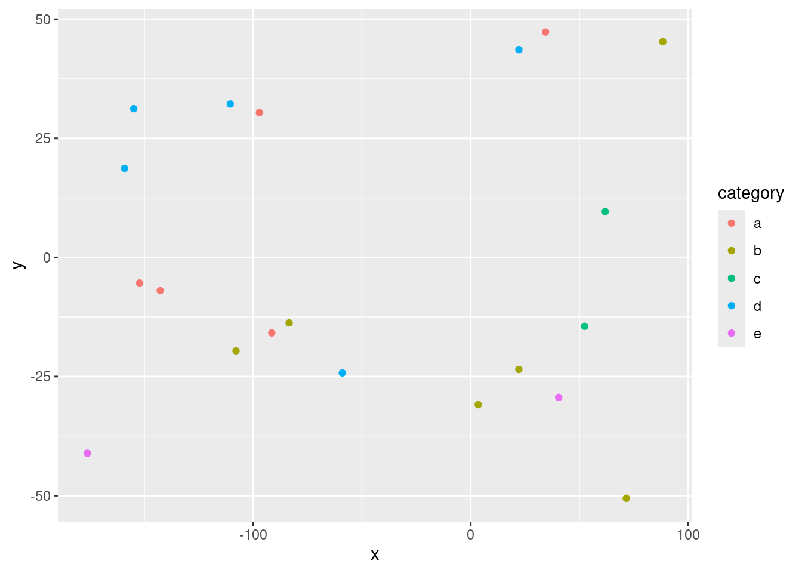
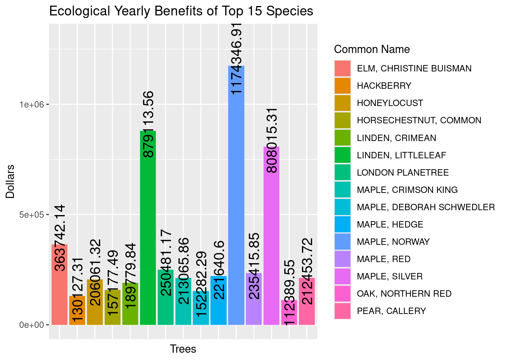

Analysis of Urban Tree Cover: City of Buffalo 2024
Work in Progress- ‘Pay no attention to the man behind the curtain’
Author
Jack Mernitz
Published
December 2, 2024
Introduction
Trees are often overlooked as a component of urban spaces. With so much focus on the growth of infrastructure, living space, and work spaces, green places are left little room to grow. Tree leaf area coverage, while possibly annoying for lawn owners in the fall, is directly related to shade capacity and other environmental benefits of trees. Permeable surfaces where trees grow also reduce runoff, trees cool the surrounding air in sufficient density, and the mental and aesthetic benefits of green spaces in urban areas for residents and tourists are notable. Urban forestry bureaus seek to classify and present some of these benefits to the public.
Quantifying and estimating the possible value of these services in relation to tree occurrence seemed like an interesting topic to delve into. Vacant spots and stumps of former trees cannot provide benefits any longer. While an intensive endeavor to replace fully grown trees, my project seeks to enumerate how useful it could be to increase tree cover. Parsing data to assign relative values for comparable trees will assist in more accurate estimation of services. Individual versus collective benefit will also be questioned, but only after calculation of total possible benefits are complete.
Materials and methods
The Dataset
Publicly available data from the City of Buffalo Department of Public Works: Bureau of Forestry exists as a list of tree inventory within the City proper. This includes multiple categories to represent trees’ ecosystem services. Downloading and processing this data is necessary, as there are 133,229 entries in the dataset. The data is organized into 28 columns, and each row is a tree site. It is a daily updated dataset existing since 2018.
Install and Load Packages
Code
install.packages("mapview")install.packages("hrbrthemes")library(tidyverse)library(dplyr)library(ggplot2)library(hrbrthemes)library(mapview)library(leaflet)library(kableExtra)library(htmlwidgets)library(widgetframe)knitr::opts_chunk$set(widgetframe_widgets_dir ='widgets' ) knitr::opts_chunk$set(cache=TRUE) # cache the results for quick compiling
tree_data %>%slice(1:5) %>%#show only 1:n rowskable(digits=2,align="c")%>%#make table and round to two digitskable_styling(bootstrap_options =c("striped", "hover", "condensed", "responsive"))
treeonly_data %>%# Count occurrences of each unique value in the third columncount(!!sym(names(treeonly_data)[3])) %>%arrange(n) %>%# Sort by counttop_n(15, n) %>%mutate(!!names(treeonly_data)[3] :=factor(!!sym(names(treeonly_data)[3]), levels =unique(!!sym(names(treeonly_data)[3])))) %>%# Factor for ordered axisggplot(aes(x =!!sym(names(treeonly_data)[3]), y = n)) +# Use the count (n) on the y-axisgeom_segment(aes(x =!!sym(names(treeonly_data)[3]), xend =!!sym(names(treeonly_data)[3]), y =0, yend = n), color ="gray") +# Add segmentsgeom_point(size =3, color ="#654194") +# Add pointscoord_flip() +# Flip coordinates to make the plot horizontaltheme_ipsum() +# Apply hrbrthemes styletheme(panel.grid.minor.y =element_blank(),panel.grid.major.y =element_blank(),legend.position ="none"# Hide the legend ) +xlab("")

Code
top_15_counts <- treeonly_data %>%count(!!sym(names(treeonly_data)[3])) %>%arrange(desc(n)) %>%# Sort by count in descending orderslice_max(n, n =15)
top_15_totals <- treeonly_data %>%group_by(!!sym(names(treeonly_data)[3])) %>%# Group by speciessummarise(total =sum(!!sym(names(treeonly_data)[5]), na.rm =TRUE)) %>%arrange(desc(total)) %>%# Sort by total in descending orderslice_max(total, n =15) # Keep only the top 15 categories by total sum# Create the bar graph for the top 15 category totals from column 5top_15_totals %>%ggplot(aes(x =!!sym(names(top_15_totals)[1]), y = total, fill =as.factor(!!sym(names(top_15_totals)[1])))) +# Use category for x-axis and fill by categorygeom_bar(stat ="identity") +# Bar graph with stat = "identity" to use the actual totalsgeom_text(aes(label = total), angle =90, hjust = .4, size =5) +scale_y_continuous(limits =c(0, 1300000)) +theme(axis.text.x =element_blank(), # Remove x-axis tick labelsaxis.ticks.x =element_blank() # Remove x-axis ticks ) +labs(fill ="Common Name") +xlab("Trees") +ylab("Dollars")

Results
Rounded proportionate spread forecasted for vacant sites.